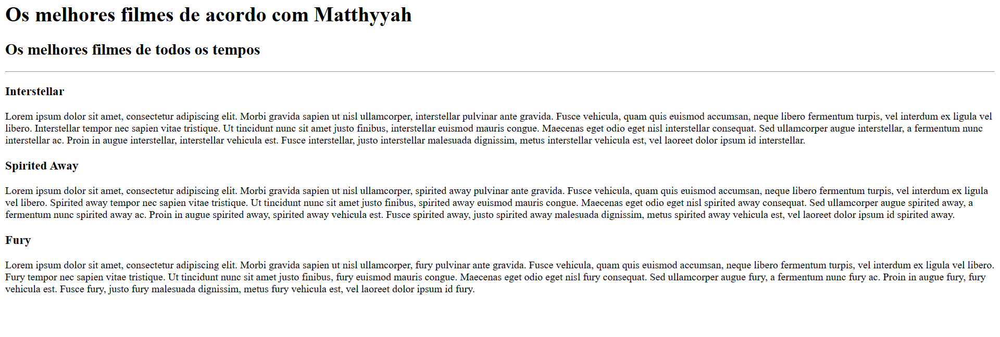

Matheus Cavalcante's portfolio
I'm a Web Deleloper and working on to be a fullstack engineer

The best movies according Matheus
My top 3 movies of all time
Insterstellar
This movie is about all the cosmos and I love it!
Spirited Away
This anime is a piece of art!
Fury
I love movies about the World War II and all the drama and action about.
About Me Contact Me